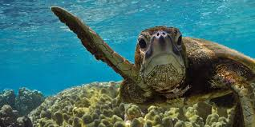
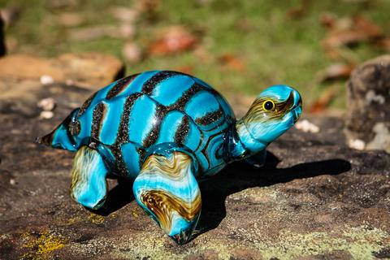

SEA TURTLE

An uninhabited Australian island littered with plastic
|
A tiny, remote island, visited only by nesting turtles and crocs, situated in the middle of nowhere, is now choking with plastic.
|

|
How climate change is turning green turtle population female in the northern Great Barrier Reef
Because incubation temperature of turtle eggs determines the animal’s sex, a warmer nest results in more females. Increasing temperatures in Queensland’s north, linked to climate change, have led to virtually no male northern green sea turtles being born.
|
The World from a Sea Turtle's Point of View
To better understand the post-release behavior of tagged green turtles, WWF and partners carefully fastened a GoPro—a tiny waterproof camera—to the back of a female sea turtle. The 15 minutes of footage the camera collected gives us a unique view of the Great Barrier Reef.
|

|

|
Can LED lights save sea turtles?
Hundreds of thousands of sea turtles are accidentally killed by fishing gear—caught on dangling hooks or entangled in nets—every year.
|
Sea turtles and shrimp cocktail : whats's the connectionSea turtles are some of the most majestic, long-living animals in the ocean, yet hundreds of thousands of them are accidentally caught and die in shrimp nets and other fishing gear each year. Endangered loggerheads, green turtles, and leatherbacks are especially vulnerable.
|

|
Click hear